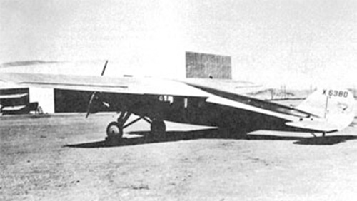

Sedan

- Разработчик: Alexander
- Страна: США
- Первый полет: 1927
- Тип: Легкий транспортный самолет
Самым неудачным самолетом компании Alexander Aircraft Co. стал легкий транспортный самолет Alexander Sedan (или Cabin Cruiser). Это был восьмиместный подкосный высокоплан, оснащенный двигателем Wright J-5 Whirlwind мощностью 220 л.с.
Единственный прототип самолета поднялся в воздух 10 декабря 1927 года. На испытания самолет показал плохие летные характеристики и проект закрыли. Владелец компании Джулиан Дон Александер (Julian Don Alexander) больше не возвращался к вопросу о создании транспортных самолетов.
Несмотря на это Sedan не разобрали. Он хранился в ангаре пока не был продан в 1939 году всего за 150 долларов. Самолет использовали для продажи фастфуда на пляже под вывеской "Самый быстрый в мире ларек для хот-догов".
| Летно технические характеристики | |
|---|---|
| Модификация | Sedan |
| Размах крыла максимальный, м | 15.85 |
| Длина, м | |
| Высота, м | |
| Площадь крыла, м2 | |
| Масса, кг | |
| - пустого самолета | |
| - нормальная взлетная | |
| Тип двигателя | 1 ПД Wright J-5 |
| Мощность, л.с. | 1 х 220 |
| Максимальная скорость у земли, км/ч | |
| Практическая дальность, км | 1609 |
| Практический потолок, м | |
| Экипаж, чел | 1 |
| Полезная нагрузка: | 7 пассажиров |